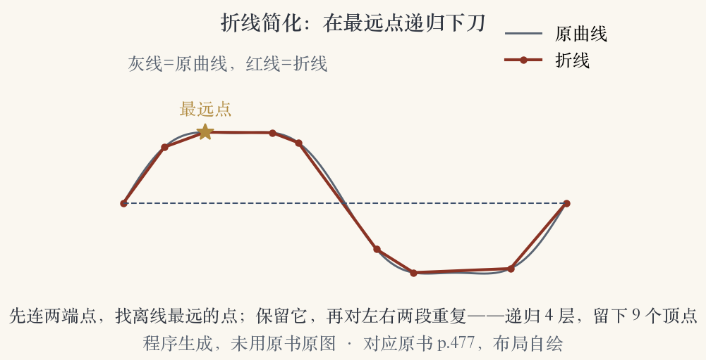
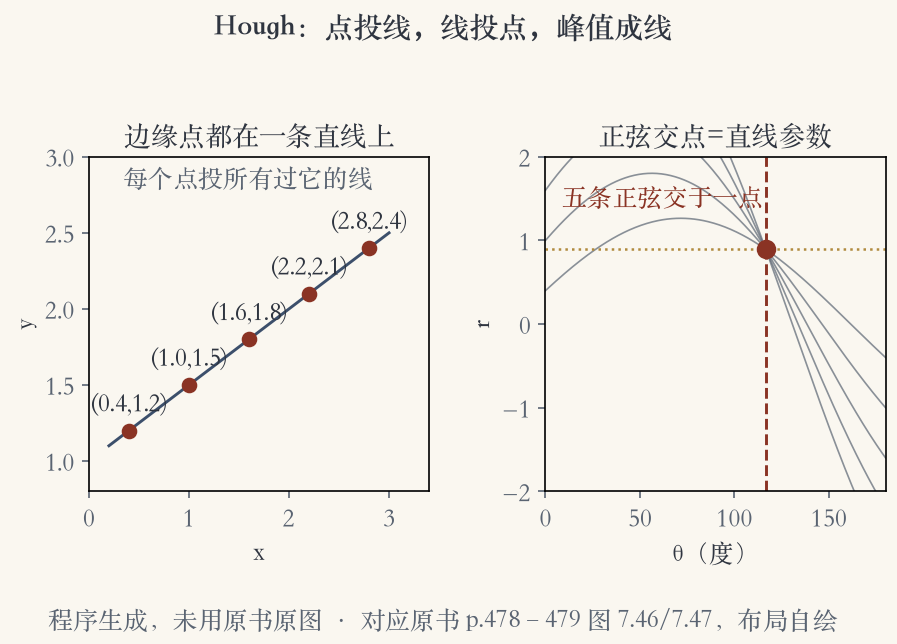
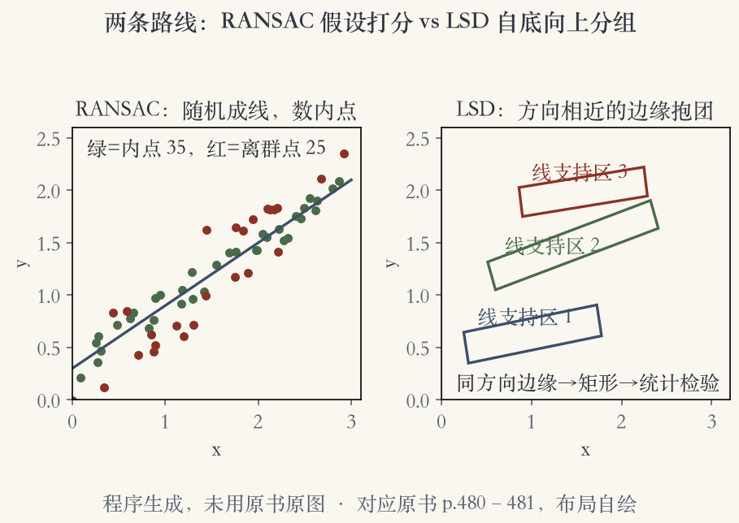

第 7 章 · 直线
人造世界，到处是直线
边缘和曲线适合描述自然物体的轮廓。
人造环境里，直线是最常见的结构线索。
建筑建模、城市位姿、文档版面都要用直线。
找直线的性价比常常高于找角点。
依据：原书第 477 页
直线用在哪
建筑建模
城市环境里的位姿估计
印刷文档的版面分析
正课第六十二集
01 / 16
本节路线
三步：压折线、投票、收消失点
先把曲线近似成分段折线。
再用 Hough 把边缘点分组成线段，跨过缺口和遮挡。
最后把共享消失点的三维直线分组。
消失点能帮相机标定和确定朝向。
依据：原书第 477 页
三条路线
折线：把曲线压直
Hough：让边缘点投票
消失点：把平行线收拢
正课第六十二集
02 / 16
折线简化 · 程序生成示意图
在最远点递归下刀
折线简化也叫直线简化，Ramer 与 Douglas-Peucker 提出。
递归找离两端点连线最远的点，在那里细分。
最远点不够远就停止。
Hershberger 与 Snoeyink 后来给了更高效的实现。
依据：原书第 477 页；本集实验

折线简化：原曲线、端点连线、最远点递归、最终折线｜程序生成，未用教材或论文原图
正课第六十二集
03 / 16
样条平滑
要更光滑，就再套样条
折线可以直接近似原曲线。
要更光滑的表示或可视化，可以用逼近或插值样条。
匹配和计算用折线更省事。
展示时再套一层样条。
依据：原书第 477 页
折线与样条
折线：省事、好算
样条：光滑、好看
按用途选表示
正课第六十二集
04 / 16
Hough 的动机
线断了，让边缘点投票接起来
真实世界的线常常断成几段。
或者由很多共线小段组成。
我们希望把共线小段合并成更长的直线。
Hough 让边缘点给可能的直线位置投票。
依据：原书第 478 页
Hough 解决什么
线断成多段
共线小段要合并
投票跨过缺口
正课第六十二集
05 / 16
原始 Hough
一个点扫出一条正弦
每个边缘点给所有经过它的直线投票。
累计值高的格子拿去做直线拟合。
在 (r,θ) 空间里，一个点扫出一条正弦曲线。
同一条直线上的点，正弦交于同一点，交点给出直线方程。
依据：原书第 478 页图 7.46
参数空间
点 → 一条正弦
同线各点 → 正弦交于一点
交点 → 直线方程
正课第六十二集
06 / 16
定向 Hough · 程序生成示意图
知道方向，就只投一个格
线上点不够稀疏时，用局部方向只投一个累计格。
边缘点先做极坐标重参数化，再在 (r,θ) 累计数组投票。
也可以围绕估计方向投少数相邻格，作为折中。
少投无用票，速度和抗噪都会好一些。
依据：原书第 478 到 479 页图 7.46/7.47

Hough 投票：边缘点、正弦、交点与峰值｜程序生成，未用教材或论文原图
正课第六十二集
07 / 16
线表示与分箱
先定表示：法向、距离、角度
投票前先选直线的表示。
图 7.48 用法向 n 和原点到直线的距离 d。
法向和图像梯度同向，再转成角度 θ。
每个轴分多少格，最好拿样例图实验定。
依据：原书第 479 页图 7.48
两个参数
n：法向，和梯度同向
d：原点到直线的距离
θ：法向转成的角度
正课第六十二集
08 / 16
Hough 实操
能不能用，全在细节
投票时可以用边缘段的长度或强度。
累计数组里保留组成该格的边缘点列表，方便后处理。
也可以把不同极性的边缘合并到同一条线段。
这些细节不改变原理，却决定实现能不能用。
依据：原书第 479 页
三个细节
按边长或强度投票
累计格保留成员边缘点
不同极性可以合并
正课第六十二集
09 / 16
立方图
升到三维，把线投到立方体面
完整的三维 (n,d) 线方程可以投到单位球。
立方图改成投到单位立方体的六个面。
最大分量选面，另外两个坐标做索引。
限制 d 非负，半立方只留三个面。
依据：原书第 479 到 480 页
为什么用立方图
避开球坐标的三角函数
选面只看最大分量
半立方：只留三个面
正课第六十二集
10 / 16
RANSAC 直线
随便猜一条线，看谁站队
随机取两个边缘点，形成一条直线假设。
数有多少其他边缘点落在这条线上。
边缘方向足够准时，一个边缘点也能产生假设。
内点数足够多的直线，就选为要找的线段。
依据：原书第 480 页
RANSAC 三步
随机两点成线
数内点
内点够多就留下
正课第六十二集
11 / 16
RANSAC 取舍
省内存，费猜测
不需要累计数组，所以更省空间。
也不那么受分箱大小影响。
缺点是要生成和测试的假设可能多得多。
Hough 费内存，但一次投票就能聚出峰。
依据：原书第 480 页
和 Hough 比
RANSAC：省空间、多假设
Hough：费空间、靠累计
按场景取舍
正课第六十二集
12 / 16
自底向上分组 · 程序生成示意图
把同方向的边缘抱成团
把方向相近的边缘点迭代聚成定向矩形，叫线支持区。
这些区域是否成立，用统计分析判断，LSD 论文就这么做。
LSD 很快，能把线段和纹理区分开。
它开源，所以在实践中很常用。
依据：原书第 480 到 481 页

两条路线：RANSAC 数内点；LSD 定向矩形线支持区｜程序生成，未用教材或论文原图
正课第六十二集
13 / 16
深度线段
网络把线段和交点一起给
近几年有深度神经网络，同时提取线段和交点。
传统方法只给线段，交点要另外算。
有了交点，后面的线框重建更省事。
依据：原书第 481 页
多出来的信息
线段
交点
线框重建更省事
正课第六十二集
14 / 16
没有共识
没有全能冠军，多试几种
哪种直线估计技术最好，书上说没有明确共识。
最好先想清楚问题，再实现几种方法做对比。
折线简化、Hough、RANSAC 都可以当候选。
数据一变，赢家可能就换人。
依据：原书第 481 页
三种候选
折线简化
Hough 投票
RANSAC 假设
正课第六十二集
15 / 16
消失点 · 小结
平行线收进同一个消失点
三维里平行的直线，在图上共享同一个消失点。
建筑边、斑马线、铁轨、家具边都是例子。
消失点能精化直线位置，有时还能定相机内外参。
图 7.51 用矩形检测做走廊、立面；下一集讲图像分割。
依据：原书第 481 到 482 页
消失点用在哪
精化直线位置
估计相机内外参
矩形检测与三维线框
正课第六十二集
16 / 16